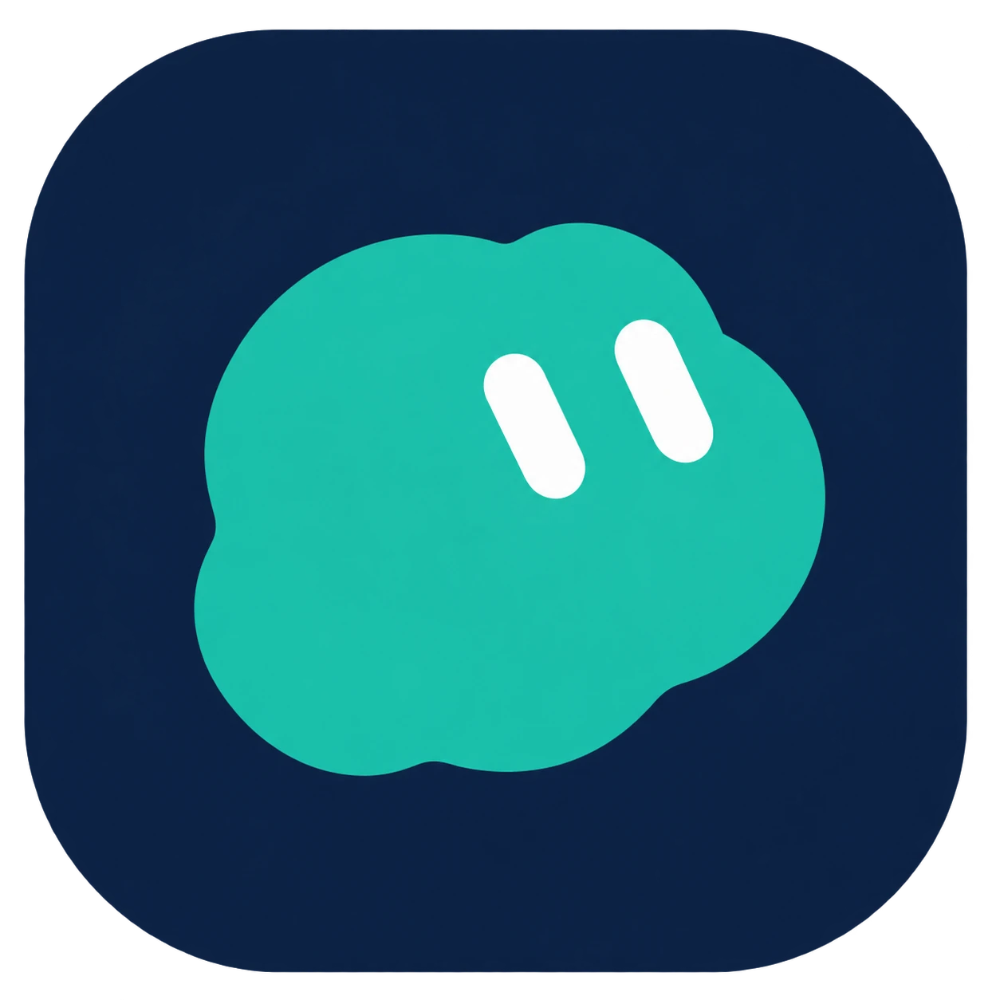

macOS app
Lumo
A macOS desktop pet inspired by the GrokBot design.

A little companion for your Mac.
Lumo blinks and turns toward your cursor. Right-click it to change its shape or color, move it around, or lock it in place.
You can also connect Lumo to local Codex or ChatGPT Work tasks. A bubble beside the pet shows the current step and lets you know when a task needs your attention.